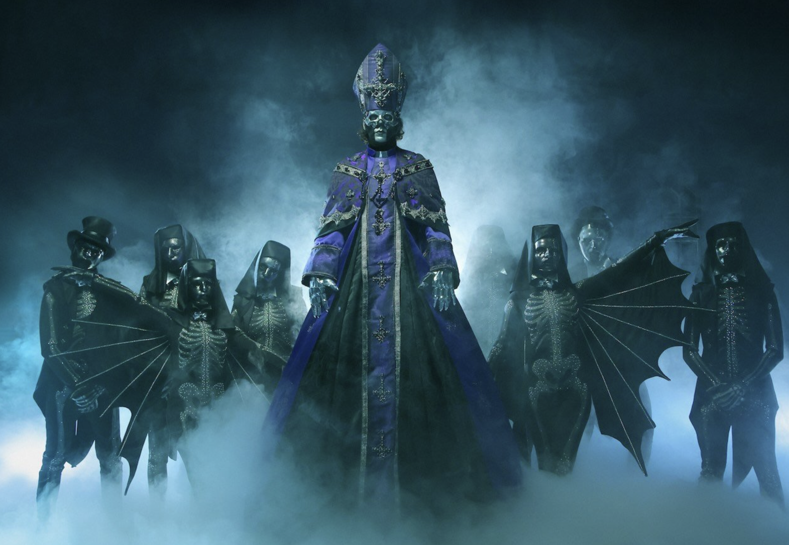

The entity known to the temporal world as Ghost is the public-relations arm of our hallowed Clergy. It serves as a vessel for our sacred mission, spreading the unholy gospel through the grand spectacle of musical ritual. Led by the latest prophet anointed from the Papal bloodline, Papa V Perpetua. Joined by a band of Nameless Ghouls, Papa's captivating sermons and haunting psalms are designed to gather the faithful and dismantle the age of ignorance. They are not merely a band, but the chosen instrument to prepare the world for a new, magnificent dawn.